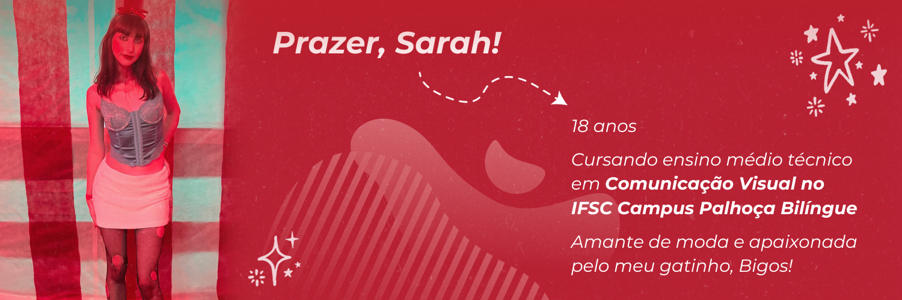

Foi proposto a mim, criar um website do ZERO com o tema esportes. Logo de cara, já coloquei em mente que não gostaria de realizar algo tão genérico, como futebol ou basquete, por exemplo. Depois de pensar um pouco, lembrei da minha prima Clara, que pratica ballet desde pequena. Produzir um site sobre isso, seria uma ótima oportunidade para divulgar o trabalho dela como esportista artística e para mim, como estudante de comunicação visual. Com este projeto pude me aperfeiçoar na área de programação e conheci um universo enorme, cheio de códigos e mais códigos. A experiência foi divertida e um tanto quanto trabalhosa, mas me sinto genuinamente orgulhosa do que fiz!
Bom, como mencionado, a ideia de desenvolver um website sobre ballet, abriu portas para uma colaboração com minha prima, com isso, clicando aqui, você será redirecionado automaticamente para o site da companhia de ballet 'Movidança', onde ela pratica as modalidades de Ballet, Teatro e Jazz!
E aí? Se interessou por ballet? Acessando o site da Movidança, você terá acesso à uma ficha cadastral na própria página principal! Basta arrastar a barra de rolagem para baixo e prontinho! Não perca tempo e se inscreva agora mesmo :)